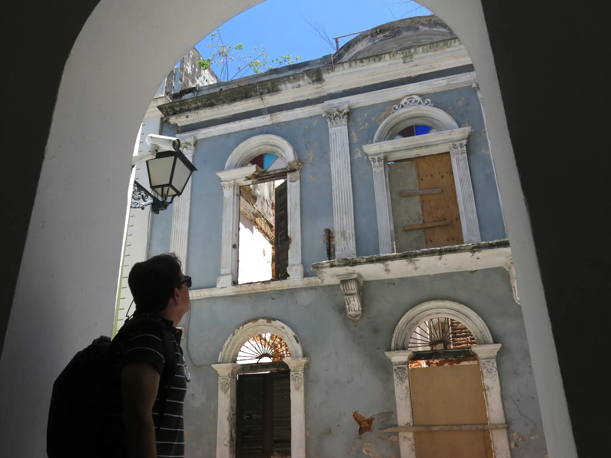
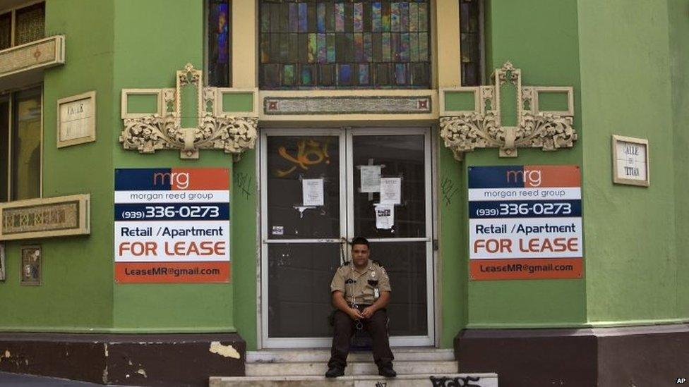
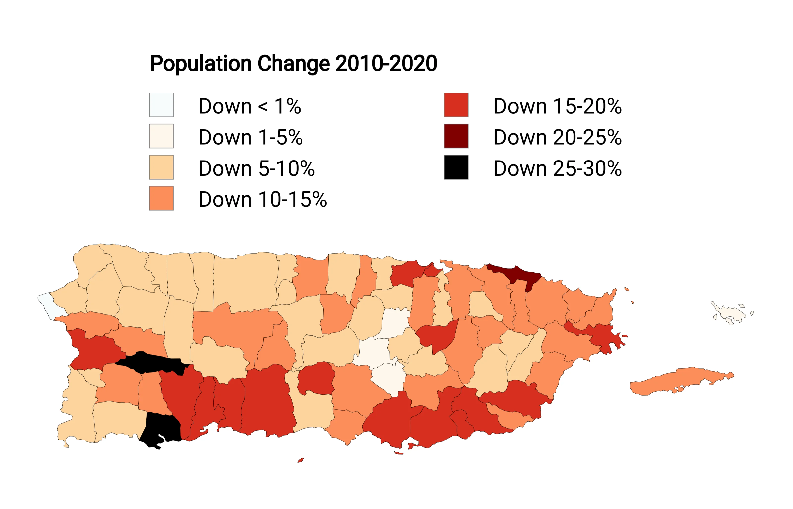
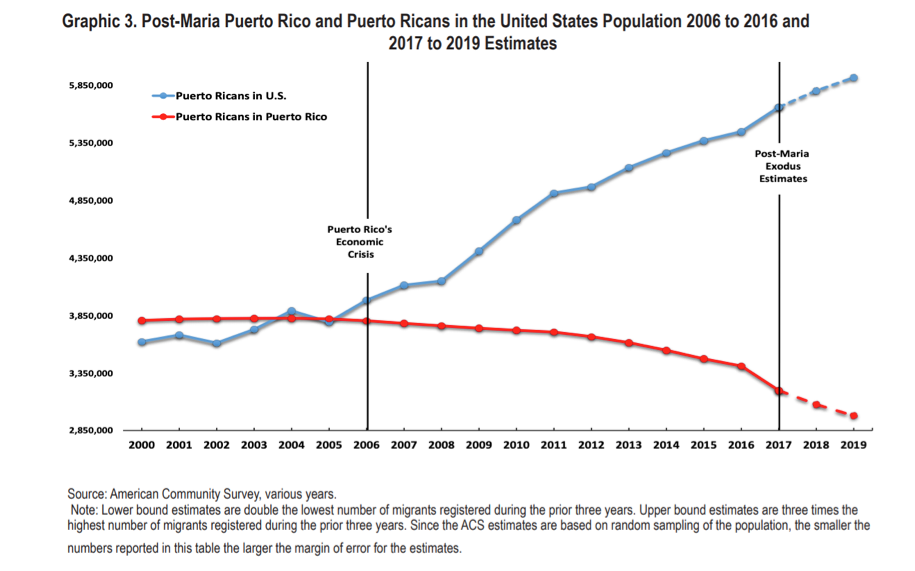
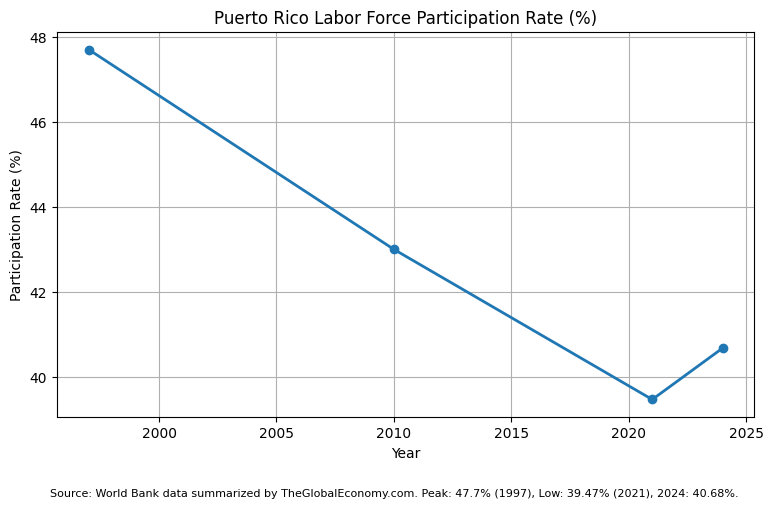
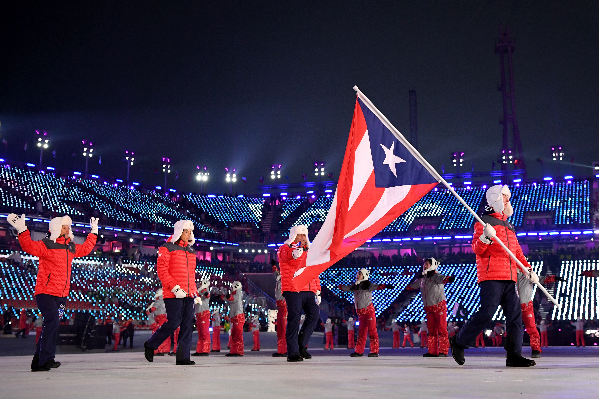
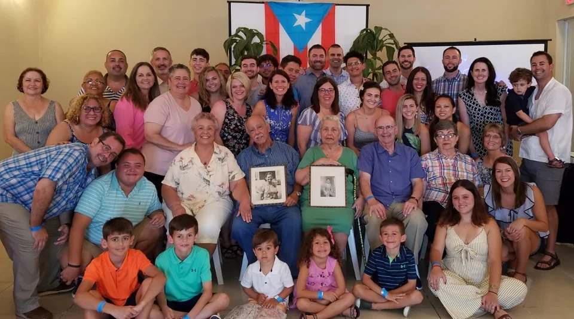

If citizenship opens the door to the American Dream, why do many Puerto Ricans still leave?


Puerto Rico becomes a U.S. territory.
U.S. citizenship granted.
Commonwealth status established.
Hurricane Maria.
Migration and housing concerns.
The contradiction becomes visible through demographic and economic trends.





What does citizenship mean? Who gets to belong? Can legal recognition replace identity?
Contemporary artists often express tensions surrounding migration, belonging, identity, and displacement. Puerto Rican artist Bad Bunny provides one example of how these concerns appear in contemporary culture.
"They want to take away the river and also the beach, They want my neighborhood and they want grandma to leave, No, don't let go of the flag or forget the lelolai, I don't want them to do to you what they did to Hawaii."Lo que le paso a Hawaii, Bad Bunny 2025🎵.
Citizenship can grant legal inclusion without guaranteeing power, prosperity, or belonging.
What is citizenship worth without power?